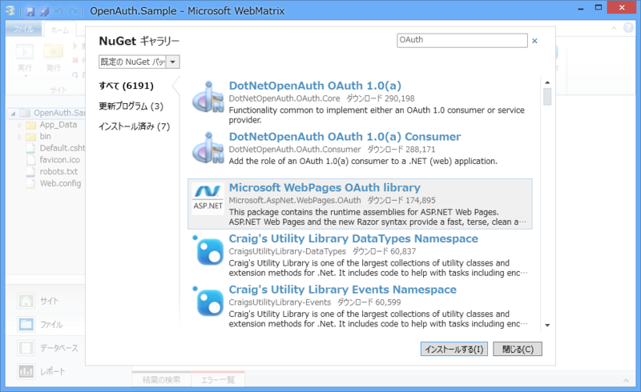
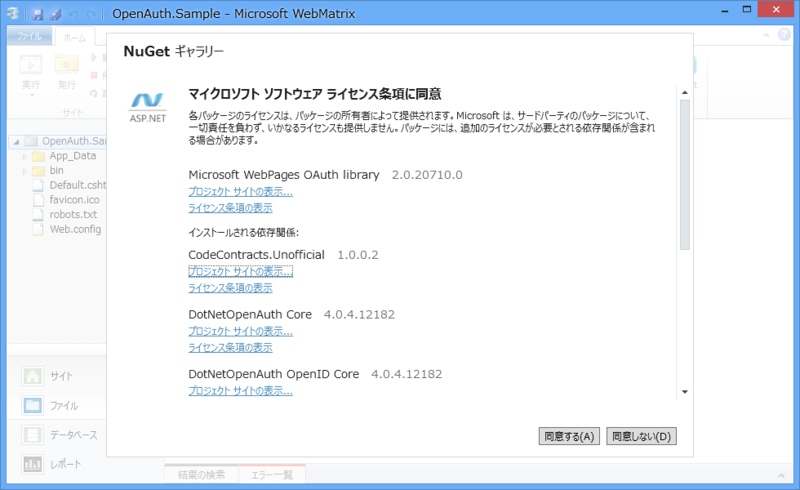
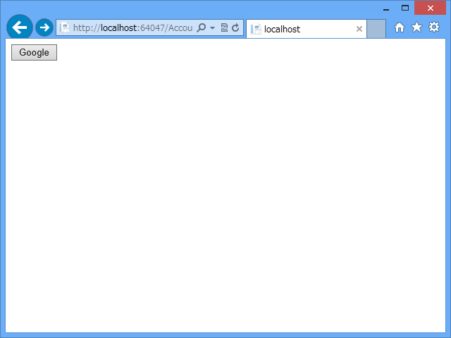
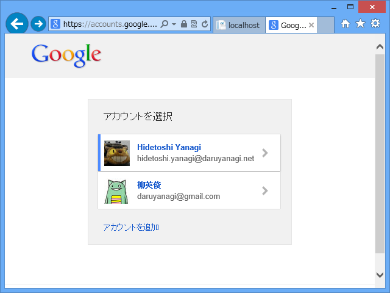
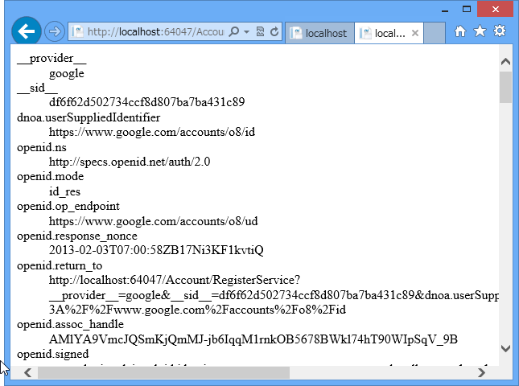

WebMatrix 2：OAuth でログインする（２）
公開日：
WebMatrix 2：OAuth でログインする - だるろぐ の続き。今回は“空のサイト”テンプレートから、OAuth によるログイン処理を書いていくことにする。まぁ、“スターターサイト”テンプレートのコードを読めば分かる人もいると思うけど、こういうのは一度自分で書いてみるに限ると思う。
NuGet で必要なものをインストール

MuGet で NuGet Gallery | Microsoft.AspNet.WebPages.OAuth 3.2.7 をインストール。
まえにやったとき（さて、WebMatrix で OAuth 認証を……Σ(ﾟдﾟlll)ｶﾞｰﾝ - だるろぐ）はインストールできなかったのだけど、今はできるようになってる。何が悪かったのかな？ ま、直ってるならいいや。

これをインストールすると、 DotNetOpenAuth を初めとする必要なライブラリも同時にインストールされる。DotNetOpenAuth 系はいろいろあってどれを入れていいのかよくわからないけれど、Microsoft WebPages OAuth library をいれておけばおっけーなのかな。
~/_AppStart.cshtml
Web サイトを初めて実行するときにロードされる ~/_AppStart.cshtml で、初期設定を行う。
@{
// いろんなところで使うので、グローバルにアクセスできるようにしとくか
App.Database = "Database";
// ユーザー管理用のテーブルを初期化・作成
WebSecurity.InitializeDatabaseConnection(
App.Database,
"UserProfile", "UserId", "UserName",
autoCreateTables: true);
// Google の OAuth を使います！
OAuthWebSecurity.RegisterGoogleClient();
}
WebSecurity.InitializeDatabaseConnection は以前（WebMatrix でユーザー認証機能 ―― 準備編 - だるろぐ）も使った。OAuth のときもこれを使うみたいだね。
~/Account/Login.cshtml
お次はログインフォーム。
@{
Page.Title = "ログイン";
var provider = Request.Form["provider"];
}
@{ // POST のときは外部サイトの認証ページへ飛ばす
if (!provider.IsEmpty() && IsPost)
{
AntiForgery.Validate(); // CSRF 対策
// 外部認証サービスでの認証を行う
// 成功したら ~/Account/RegisterService.cshtml を開く
OAuthWebSecurity.RequestAuthentication(
provider,
Href("~/Account/RegisterService")
);
return;
}
}
@{ // GET のとき（だけじゃないけど）は、
// 外部認証サービスを選択するフォームを表示する
if (OAuthWebSecurity.RegisteredClientData.Count == 0)
{
<p>外部認証サービスが構成されていません。</p>
}
else
{
<form method="post">
@AntiForgery.GetHtml()
<p>
@foreach (var client in OAuthWebSecurity.RegisteredClientData)
{
<button type="submit" name="provider"
value="@client.AuthenticationClient.ProviderName"
title="@client.DisplayName アカウントを使用してログイン">
@client.DisplayName
</button>
}
</p>
</form>
}
}

このボタンを押すと、

Google の認証ページに飛ぶはず。
~/Account/RegisterService.cshtml
Google での認証が成功すると、このページに着地する。まぁ、名前は好きにすればいいと思う。
@{
Page.Title = "登録";
}
<dl>
@foreach (var key in Request.Params.Keys)
{
<dt>@key</dt>
<dd>@Request.Params[key.ToString()]</dd>
}
</dl>

今回はパラメーターを列挙するだけにしておいた。ほんとはここから
- 認証がうまくいったか
- 認証データの取り出し
- このサイトでの認証とデータベースへの登録
などを行わないといけない。外部認証サービスによって返ってくるデータは微妙に違うけれど、
- OAuthWebSecurity.VerifyAuthentication Method (Microsoft.Web.WebPages.OAuth) | Microsoft Docs
- OAuthWebSecurity.TryDeserializeProviderUserId(String, String, String) Method (Microsoft.Web.WebPages.OAuth) | Microsoft Docs
- OAuthWebSecurity.TryGetOAuthClientData(String, AuthenticationClientData) Method (Microsoft.Web.WebPages.OAuth) | Microsoft Docs
などを使うことによって、統一的に扱えるようなので安心……という感じのようだ。知らんけど。
今日のところは、ここまで。